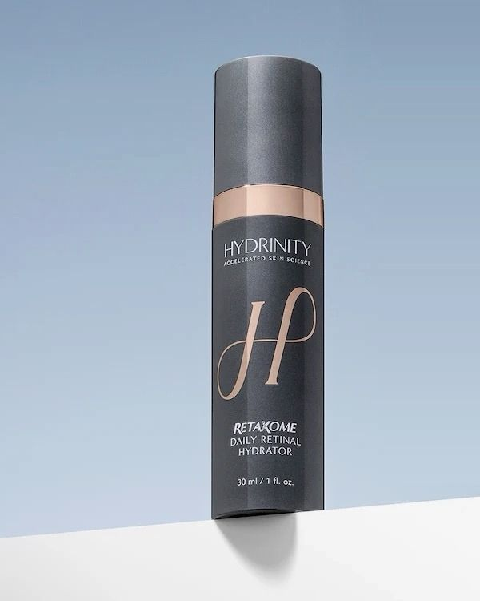

Draft for Katrina’s review. Not published.
The ABK JournalRetinol vs retinal: a beginner's guide to retinoids without the irritation
Retinol vs retinal explained: how retinoids work, Retinol Complete vs RetaXome, how to start without irritation, what not to mix and who should wait.
From the ABK SKIN studio
Charlotte, NC · Updated

Retinoids are some of the most studied ingredients in skincare. They are used to improve the look of fine lines, rough texture, uneven tone and breakouts. They also have a reputation for dryness, flaking and stinging, which is why many people buy a retinol, use it twice and give up.
The secret is choosing the right form and starting the right way. This guide explains retinol vs retinal, how the two retinoid products in the ABK SKIN shop differ, a step-by-step plan to start without irritation and the mistakes to avoid.
In short
- Retinoids are vitamin A ingredients that support cell turnover. Retinol and retinal (retinaldehyde) are two forms used in cosmetic skincare.
- Retinal is one conversion step closer to the active form your skin uses than retinol, which is why it is often described as faster-acting.
- Retinol Complete from Revision Skincare comes in 0.5 ($118) and 1.0 ($138) strengths, with time-released retinol and hydrating ingredients.
- RetaXome Daily Retinal Hydrator from Hydrinity ($145) is a retinal treatment designed to be gentle enough for nightly use.
- Start slowly, use retinoids at night and wear sunscreen every morning.
What are retinoids?
Retinoids are a family of ingredients derived from vitamin A. In skincare, they support cell turnover, which is why they are used to smooth texture, improve the look of fine lines and even out tone. Prescription retinoids exist too, but this guide focuses on the cosmetic forms you can buy in the ABK SKIN shop.
Your skin converts cosmetic retinoids in steps before they become retinoic acid, the form it uses:
| Form | Conversion steps to retinoic acid | Commonly described as |
|---|---|---|
| Retinyl esters | More steps | Gentlest, slowest |
| Retinol | Two steps | The classic, well-known option |
| Retinal (retinaldehyde) | One step | Faster-acting than retinol |
| Retinoic acid | None | Prescription strength |
Fewer steps generally means a stronger, faster effect. It can also mean more potential for irritation, which is why the formula around the retinoid matters so much.
Retinol vs retinal: the key differences
| Retinol | Retinal | |
|---|---|---|
| Distance from retinoic acid | Two steps | One step |
| Speed | Gradual | Often faster |
| Irritation potential | Depends on strength and formula | Depends on strength and formula; delivery systems help |
| Best for | First-time users and building tolerance | Clients who want more from their routine, or who tolerate retinol well |
Neither is "better" for everyone. The best retinoid is the one your skin tolerates consistently, because consistency is what drives results.
Retinol Complete vs RetaXome in the ABK SKIN shop
| Retinol Complete | RetaXome Daily Retinal Hydrator | RetaXome Retinal Boost Treatment Pads | |
|---|---|---|---|
| Brand | Revision Skincare | Hydrinity | Hydrinity |
| Retinoid | Time-released retinol | Retinal | Encapsulated retinal plus a 5-acid blend |
| Strength or format | 0.5 or 1.0 | Daily hydrator | Box of 20 leave-on pads |
| Price | $118 (0.5) or $138 (1.0) | $145 | $90 |
| How often | 2 to 3 nights a week, increasing as tolerated | Once daily in the evening | One pad every 3 days in the evening |
| Notable extras | Bakuchiol, THD ascorbate, hydrating ingredients | Supports firmness and hydration | Supercharged HA, multi-acid resurfacing |
Product details and directions come from the ABK SKIN shop product pages.
Retinol Complete
Retinol Complete is an award-winning serum with time-released retinol, designed for maximum efficacy with minimal irritation. It includes bakuchiol, THD ascorbate (vitamin C), sesame extract and hydrating ingredients to help combat the dryness associated with retinol. The directions call for use only at night, two to three times a week, increasing as tolerated, with sunscreen during the day.
Start with the 0.5 strength if you are new to retinol. Move to 1.0 only after your skin is comfortable with nightly use, and ask your aesthetician first.
RetaXome Daily Retinal Hydrator
RetaXome Daily Retinal Hydrator is Hydrinity's retinal treatment. Hydrinity describes it as delivering the renewal benefits of retinal without the irritation, supporting cell turnover, firmness and hydration while remaining gentle enough for nightly use. Apply a small amount to the face and neck once daily in the evening after cleansing.
RetaXome Retinal Boost Treatment Pads
The RetaXome Retinal Boost Treatment Pads combine encapsulated retinal with a five-acid blend and hyaluronic acid. Because they combine a retinoid and acids, they are a step up, used every three days. Avoid layering them with other exfoliants.
How to start a retinoid without irritation
1. Pick one retinoid. Do not combine retinol, retinal pads and other strong actives at the start. 2. Start two or three nights a week. Increase only as your skin tolerates it. 3. Use a small amount. One to two pumps of Retinol Complete is enough for the face, per the directions. 4. Apply to clean, dry skin at night, avoiding the eye area. 5. Moisturize. A barrier-supporting cream such as CÉLTHERA Advanced Overnight Repair Cream ($160) helps keep skin comfortable. 6. Wear sunscreen every morning. Retinoids can make skin more sun-sensitive. Intellishade is a simple option. 7. Give it time. Changes in texture and fine lines build over weeks to months.
Sample starter week
| Night | Routine |
|---|---|
| Monday | Cleanse, retinoid, moisturizer |
| Tuesday | Cleanse, hydrating serum, moisturizer |
| Wednesday | Cleanse, hydrating serum, moisturizer |
| Thursday | Cleanse, retinoid, moisturizer |
| Friday | Cleanse, hydrating serum, moisturizer |
| Saturday | Cleanse, hydrating serum, moisturizer |
| Sunday | Cleanse, retinoid, moisturizer |
Retinoid side effects: what is normal?
Some dryness, mild flaking or tightness is common when you first start. That is your skin adjusting. Signs you need to slow down include:
- Stinging or burning that does not fade
- Redness that lasts or spreads
- Raw, shiny or tender patches
- Products that suddenly sting
If this happens, pause your retinoid, focus on gentle cleansing and hydration, and restart more slowly. The over-exfoliation guide explains how to reset an irritated barrier.
What not to mix with retinol or retinal
- Exfoliating acids on the same night, such as glycolic or salicylic acid, unless your aesthetician has built them into your plan
- Scrubs and at-home peels
- Other retinoid products at the same time
Vitamin C is generally used in the morning and retinoids at night, which avoids layering them together.
Retinoids and professional treatments
Tell your aesthetician if you use a retinoid before booking dermaplaning, a chemical peel or microneedling. You may be asked to pause it for a few days beforehand and afterward. Follow their timing.
Who should not use retinoids
- Pregnant or breastfeeding? Do not use retinoids unless your doctor says it is OK.
- Using prescription acne medication? Ask your prescriber before adding a cosmetic retinoid.
- Have eczema, rosacea or very reactive skin? Talk to your aesthetician or dermatologist first.
The takeaway
Retinol and retinal are both vitamin A ingredients that support cell turnover. Retinal works one step faster, while retinol is a classic way to build tolerance. Retinol Complete 0.5 is a gentle place to start, and RetaXome Daily Retinal Hydrator is a retinal option designed for nightly comfort. Whichever you choose, start slowly, moisturize and wear sunscreen every day. Not sure which suits you? Take the skin care quiz or book a virtual consultation.
Frequently asked questions
What is the difference between retinol and retinal?
Both are vitamin A ingredients. Retinal is one conversion step from retinoic acid, while retinol is two, so retinal is often described as faster-acting.
Which retinol is best for beginners?
Retinol Complete 0.5 is a good starting point. It uses time-released retinol with hydrating ingredients, used two to three nights a week at first.
Is retinal stronger than retinol?
Retinal is generally considered faster-acting because it needs fewer conversion steps. How irritating it feels depends on the formula and strength.
Can I use retinol every night?
Start two to three nights a week and increase only as your skin tolerates it. Many people eventually use a retinoid most nights.
Can I use vitamin C and retinol together?
Most routines use vitamin C in the morning and retinoids at night, so they do not need to be layered together.
Do retinoids cause purging?
Some people notice a temporary increase in breakouts or flaking as cell turnover speeds up. If irritation is severe or lasts, slow down and ask your aesthetician.
Can I use retinol while pregnant?
Do not use retinoids during pregnancy or while breastfeeding unless your doctor approves it.
Should I stop retinol before a facial?
Tell your aesthetician you use it. You may need to pause it for a few days before and after dermaplaning, peels or microneedling.
Questions about your skin?
Email abkskinn@gmail.com or bring them to your next appointment.